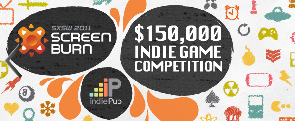

No Brasil, o e-Games é um dos poucos concursos de desenvolvimento de jogos organizados por aqui. Em outros países, talvez principalmente nos EUA, concursos de desenvolvimento de jogos são mais comuns e alguns dão prêmios muito bons em dinheiro, além de reconhecimento na indústria de games. Muitos jogos independentes que são famosos hoje conseguiram esta fama após ganhar alguns concursos deste tipo. Para participar destes concursos é muito importante ler o regulamento antes de entrar, pois podem haver restrições.
Mês passado foi aberta a inscrição para o concurso “Independent Propeller Awards at SXSW ScreenBurn” no indiePub Games, com prêmios de $150,000. Neste concurso você pode inscrever praticamente qualquer jogo, inclusive versão de demonstração. As inscrições terminam em 18 de fevereiro.
Sobre o concurso: http://www.indiepubgames.com/contest.php?contestId=2&show=info
Como o prazo é curto, decidi inscrever o Oniro neste concurso. Fiz uma versão do jogo em os textos em inglês, assim fica mais fácil para quem quiser jogar. Estou participando apenas para ganhar experiência, sei que não tenho muitas chances de ganhar algo, até por que o nível de competição deste concurso deve ser altíssimo. O importante é participar!
Esta é a página do Oniro no indiePub: http://www.indiepubgames.com/game/Oniro
Agora que terminei minha pós-graduação, vou me dedicar a participar de concursos de desenvolvimento de jogos independentes, sempre que puder participar. E sempre que encontrar algum concurso assim vou postar aqui no blog informações sobre ele.